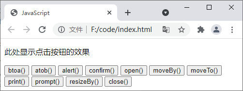

首页 > JavaScript
JS BOM（浏览器对象模型）
浏览器对象模型（Browser Object Model，简称 BOM）是 JavaScript 的组成部分之一，BOM 赋予了 JavaScript 程序与浏览器交互的能力。
window 对象是 BOM 的核心，用来表示当前浏览器窗口，其中提供了一系列用来操作或访问浏览器的方法和属性。另外，JavaScript 中的所有全局对象、函数以及变量也都属于 window 对象，甚至我们前面介绍的 document 对象也属于 window 对象。
示例代码如下：
示例代码如下：
window 对象是 BOM 的核心，用来表示当前浏览器窗口，其中提供了一系列用来操作或访问浏览器的方法和属性。另外，JavaScript 中的所有全局对象、函数以及变量也都属于 window 对象，甚至我们前面介绍的 document 对象也属于 window 对象。
注意：如果 HTML 文档中包含框架（<frame> 或 <iframe> 标签），浏览器会为 HTML 文档创建一个 window 对象的同时，为每个框架创建一个额外的 window 对象。
window 对象中的属性
下表中列举了 window 对象中提供的属性及其描述：| 属性 | 描述 |
|---|---|
| closed | 返回窗口是否已被关闭 |
| defaultStatus | 设置或返回窗口状态栏中的默认文本 |
| document | 对 Document 对象的只读引用 |
| frames | 返回窗口中所有已经命名的框架集合，集合由 Window 对象组成，每个 Window 对象在窗口中含有一个 <frame> 或 <iframe> 标签 |
| history | 对 History 对象的只读引用，该对象中包含了用户在浏览器中访问过的 URL |
| innerHeight | 返回浏览器窗口的高度，不包含工具栏与滚动条 |
| innerWidth | 返回浏览器窗口的宽度，不包含工具栏与滚动条 |
| localStorage | 在浏览器中以键值对的形式保存某些数据，保存的数据没有过期时间，会永久保存在浏览器中，直至手动删除 |
| length | 返回当前窗口中 <iframe> 框架的数量 |
| location | 引用窗口或框架的 Location 对象，该对象中包含当前 URL 的有关信息 |
| name | 设置或返回窗口的名称 |
| navigator | 对 Navigator 对象的只读引用，该对象中包含当前浏览器的有关信息 |
| opener | 返回对创建此窗口的 window 对象的引用 |
| outerHeight | 返回浏览器窗口的完整高度，包含工具栏与滚动条 |
| outerWidth | 返回浏览器窗口的完整宽度，包含工具栏与滚动条 |
| pageXOffset | 设置或返回当前页面相对于浏览器窗口左上角沿水平方向滚动的距离 |
| pageYOffset | 设置或返回当前页面相对于浏览器窗口左上角沿垂直方向滚动的距离 |
| parent | 返回父窗口 |
| screen | 对 Screen 对象的只读引用，该对象中包含计算机屏幕的相关信息 |
| screenLeft | 返回浏览器窗口相对于计算机屏幕的 X 坐标 |
| screenTop | 返回浏览器窗口相对于计算机屏幕的 Y 坐标 |
| screenX | 返回浏览器窗口相对于计算机屏幕的 X 坐标 |
| sessionStorage | 在浏览器中以键值对的形式存储一些数据，数据会在关闭浏览器窗口或标签页之后删除 |
| screenY | 返回浏览器窗口相对于计算机屏幕的 Y 坐标 |
| self | 返回对 window 对象的引用 |
| status | 设置窗口状态栏的文本 |
| top | 返回最顶层的父窗口 |
示例代码如下：
<!DOCTYPE html>
<html lang="en">
<head>
<meta charset="UTF-8">
<title>JavaScript</title>
</head>
<body>
<script type="text/javascript">
window.defaultStatus = "JavaScript"
document.write(window.defaultStatus + "<br>"); // 输出：JavaScript
document.write(window.innerHeight + "<br>"); // 输出：314
document.write(window.innerWidth + "<br>"); // 输出：539
document.write(window.length + "<br>"); // 输出：0
document.write(window.location + "<br>"); // 输出：file:///F:/code/index.html
document.write(window.opener + "<br>"); // 输出：null
document.write(window.outerHeight + "<br>"); // 输出：558
document.write(window.outerWidth + "<br>"); // 输出：555
document.write(window.parent + "<br>"); // 输出：[object Window]
document.write(window.screenLeft + "<br>"); // 输出：2263
document.write(window.screenTop + "<br>"); // 输出：401
document.write(window.screenX + "<br>"); // 输出：2263
document.write(window.screenY + "<br>"); // 输出：401
</script>
</body>
</html>
window 对象中的方法
下表中列举了 window 对象中提供的方法及其描述：| 方法 | 描述 |
|---|---|
| alert() | 在浏览器窗口中弹出一个提示框，提示框中有一个确认按钮 |
| atob() | 解码一个 base-64 编码的字符串 |
| btoa() | 创建一个 base-64 编码的字符串 |
| blur() | 把键盘焦点从顶层窗口移开 |
| clearInterval() | 取消由 setInterval() 方法设置的定时器 |
| clearTimeout() | 取消由 setTimeout() 方法设置的定时器 |
| close() | 关闭某个浏览器窗口 |
| confirm() | 在浏览器中弹出一个对话框，对话框带有一个确认按钮和一个取消按钮 |
| createPopup() | 创建一个弹出窗口，注意：只有 IE 浏览器支持该方法 |
| focus() | 使一个窗口获得焦点 |
| getSelection() | 返回一个 Selection 对象，对象中包含用户选中的文本或光标当前的位置 |
| getComputedStyle() | 获取指定元素的 CSS 样式 |
| matchMedia() | 返回一个 MediaQueryList 对象，表示指定的媒体查询解析后的结果 |
| moveBy() | 将浏览器窗口移动指定的像素 |
| moveTo() | 将浏览器窗口移动到一个指定的坐标 |
| open() | 打开一个新的浏览器窗口或查找一个已命名的窗口 |
| print() | 打印当前窗口的内容 |
| prompt() | 显示一个可供用户输入的对话框 |
| resizeBy() | 按照指定的像素调整窗口的大小，即将窗口的尺寸增加或减少指定的像素 |
| resizeTo() | 将窗口的大小调整到指定的宽度和高度 |
| scroll() | 已废弃。您可以使用 scrollTo() 方法来替代 |
| scrollBy() | 将窗口的内容滚动指定的像素 |
| scrollTo() | 将窗口的内容滚动到指定的坐标 |
| setInterval() | 创建一个定时器，按照指定的时长（以毫秒计）来不断调用指定的函数或表达式 |
| setTimeout() | 创建一个定时器，在经过指定的时长（以毫秒计）后调用指定函数或表达式，只执行一次 |
| stop() | 停止页面载入 |
| postMessage() | 安全地实现跨源通信 |
示例代码如下：
<!DOCTYPE html>
<html lang="en">
<head>
<meta charset="UTF-8">
<title>JavaScript</title>
</head>
<body>
<p id="show_tag">此处显示点击按钮的效果</p>
<button onclick="myBtoa()">btoa()</button>
<button onclick="myAtob()">atob()</button>
<button onclick="myAlert()">alert()</button>
<button onclick="myConfirm()">confirm()</button>
<button onclick="myOpen()">open()</button>
<button onclick="myMoveBy()">moveBy()</button>
<button onclick="myMoveTo()">moveTo()</button>
<button onclick="myPrint()">print()</button>
<button onclick="myPrompt()">prompt()</button>
<button onclick="myResizeBy()">resizeBy()</button>
<button onclick="myClose()">close()</button>
<script type="text/javascript">
var ptag = document.getElementById('show_tag');
var str;
function myBtoa(){
str = btoa("JavaScript");
ptag.innerHTML = str;
}
function myAtob(){
ptag.innerHTML = typeof str;
if(str == undefined){
ptag.innerHTML = "请先点击 btoa() 按钮";
return;
}
ptag.innerHTML = atob(str);
}
function myAlert(){
alert("这是一个提示框！");
}
function myConfirm(){
var x;
var r = confirm("按下按钮!");
if (r == true){
x = "你按下了\"确定\"按钮!";
}
else{
x = "你按下了\"取消\"按钮!";
}
ptag.innerHTML = x;
}
var myWin;
function myOpen(){
if(myWin == undefined || (myWin != undefined && myWin.closed == true)){
myWin = window.open('', '', 'width=200,height=100');
}else{
return;
}
}
function myMoveBy(){
if(myWin == undefined || myWin.closed == true) myOpen();
myWin.moveBy(200, 200);
}
function myMoveTo(){
if(myWin == undefined || myWin.closed == true) myOpen();
myWin.moveTo(0, 0);
}
function myPrint(){
print();
}
function myPrompt(){
var name = prompt("请输入你的名字。")
if (name != null && name != ""){
ptag.innerHTML = "你好 " + name + "! 今天感觉如何?";
} else {
ptag.innerHTML = "你没有输入任何内容";
}
}
function myResizeBy(){
if(myWin == undefined || myWin.closed == true) myOpen();
myWin.resizeBy(100, 100);
}
function myClose(){
if(myWin == undefined) return;
if(myWin != undefined && myWin.closed == false) myWin.close();
}
</script>
</body>
</html>
运行结果如下图所示，点击页面中的按钮即可实现相应功能。

图1：JS window 对象中方法的使用
图1：JS window 对象中方法的使用
关注公众号「站长严长生」，在手机上阅读所有教程，随时随地都能学习。内含一款搜索神器，免费下载全网书籍和视频。

微信扫码关注公众号